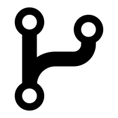

What is the purpose of a README file?
A README.md is an important document in a repository that introduces the project and explains its purpose, setup, and usage to help users and developers understand and contribute to it.
Read moreThis is a guide for understanding README files, wireframes, and GIT branches.
A README.md is an important document in a repository that introduces the project and explains its purpose, setup, and usage to help users and developers understand and contribute to it.
Read moreWireframes give you clarity about how your project will look, it help you in visualizing the layout and functionality. This will also help you to have clear communication with the team members, clients, and developers.
Read more
In Git, a branch is a separate workspace where you can make changes and try new ideas without affecting the main project. You can think of it as a "parallel universe" for your code.
Read more